Note: This module is tested and working in Enterprise Edition. And we are supporting Ubuntu OS and not Windows OS.
Features
We can define type of users like Sales Person & Cashier.
Sales Person only can make draft order from POS.
Sales Persons only can see their own orders.
Cashier can see all the draft orders of sales persons which are selected under that cashier. Cashier can edit or pay those orders.
View order history.
Reprint receipt from order list.
Edit draft order.
Reorder previous order from order list.
Restrict sales person to give discount and change price.
Sales person can not give discount beyond the assigned limit. if he want to go beyond limit then manager authentication is required.
There are two different methods for authentication like by securiry PIN number or by scan Barcode of Manager.The method should be used based on configuaration of user.
How to use
As per below image you can define type for users based on role. Here both users are sales person.
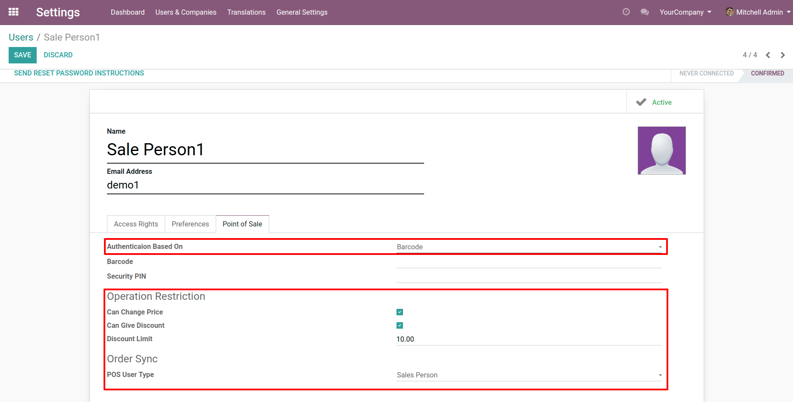
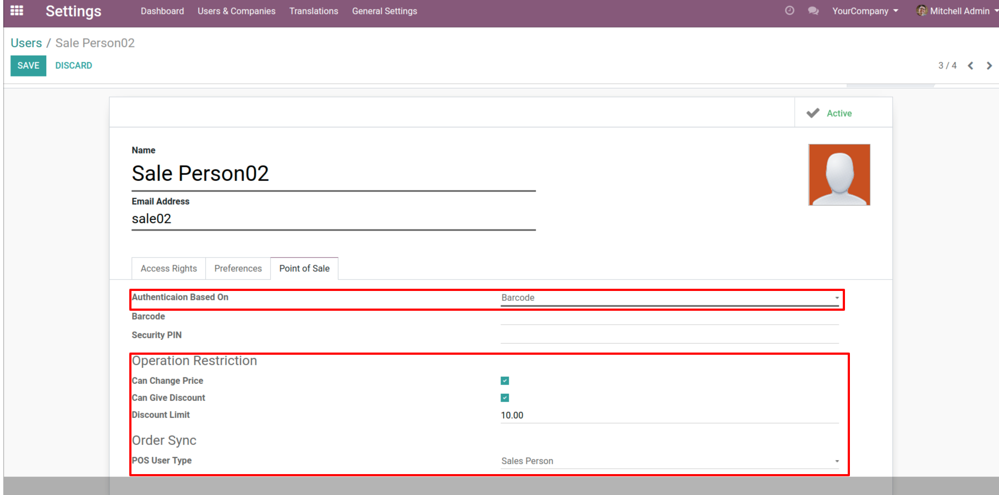
Here is configuration of cashier and we can configure sales persons which will belong to this cashier.
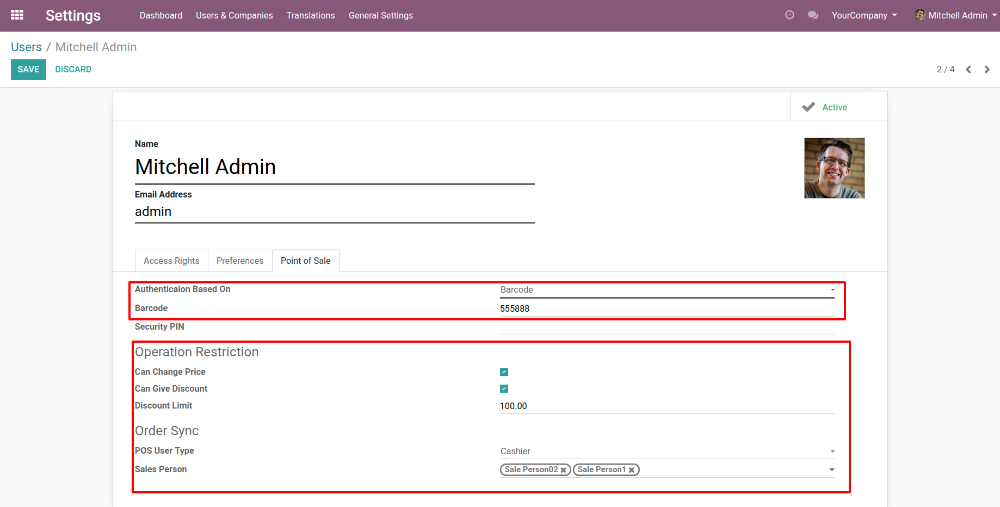
Here is pos configuration for enable order sync and select managers which will use for authentication in POS while giving discount beyond the assigned limit.
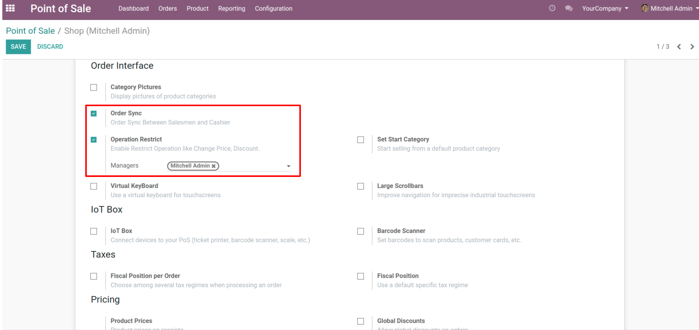
Here this pos user is sales person that's why he can only create draft orders.
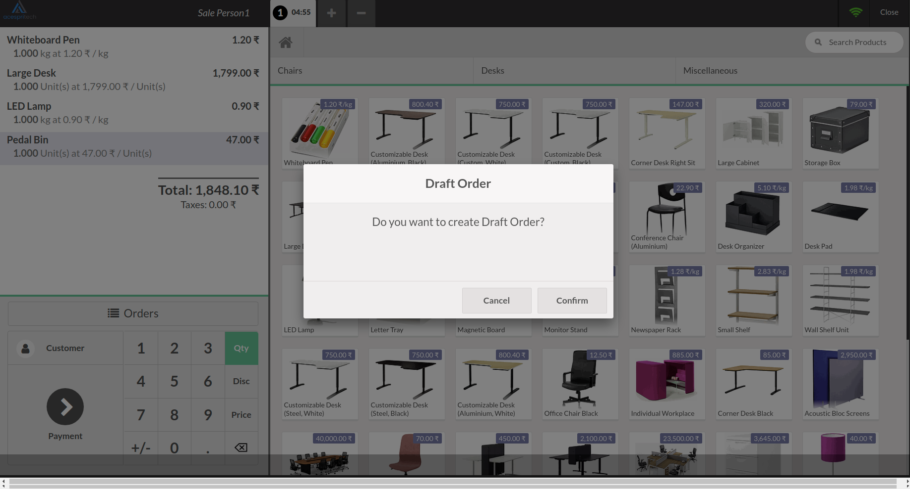
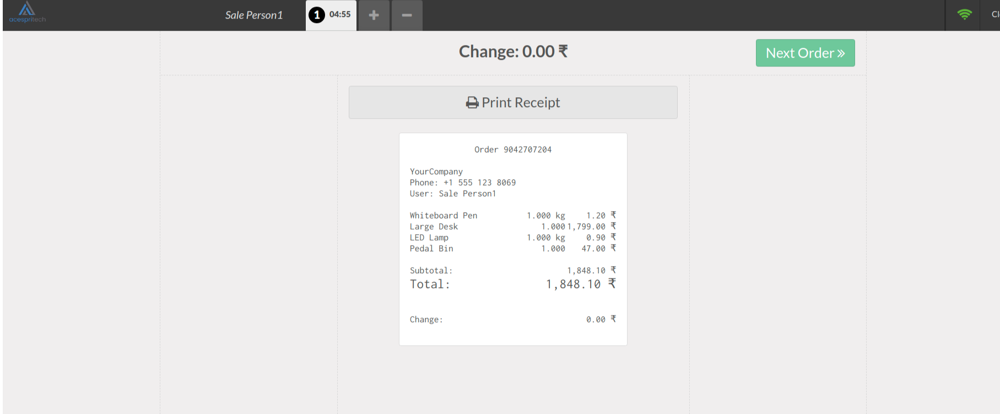
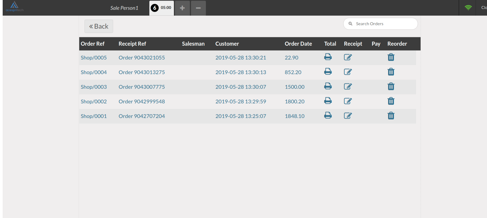
As soon as Sales person make draft order then immediately cashier will get notification and order in cashier POS and cashier can do reprint, edit, payment or reorder from POS.
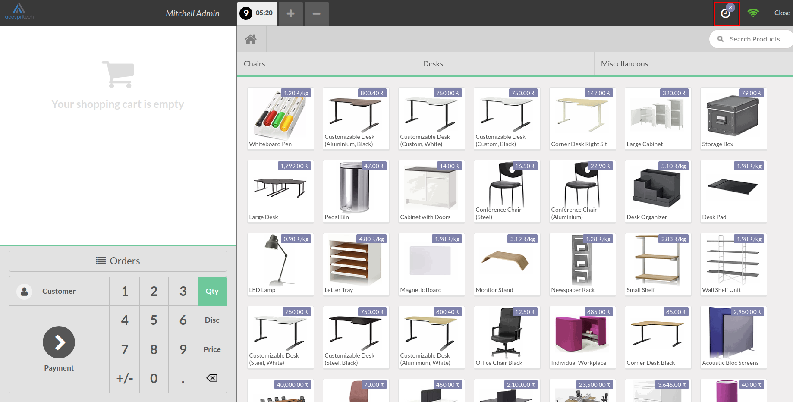
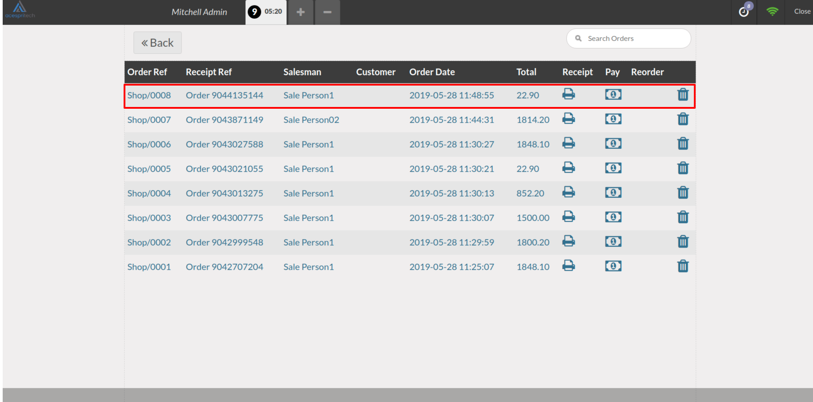
Here is another user will make order in draft and cashier get instant update of that order on POS.
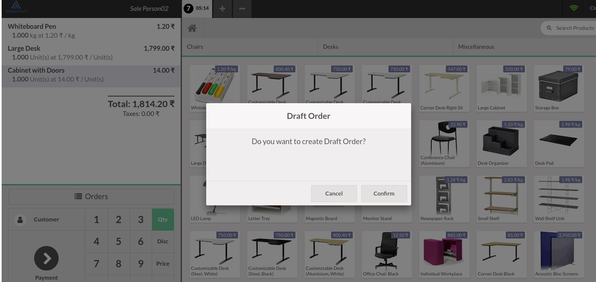
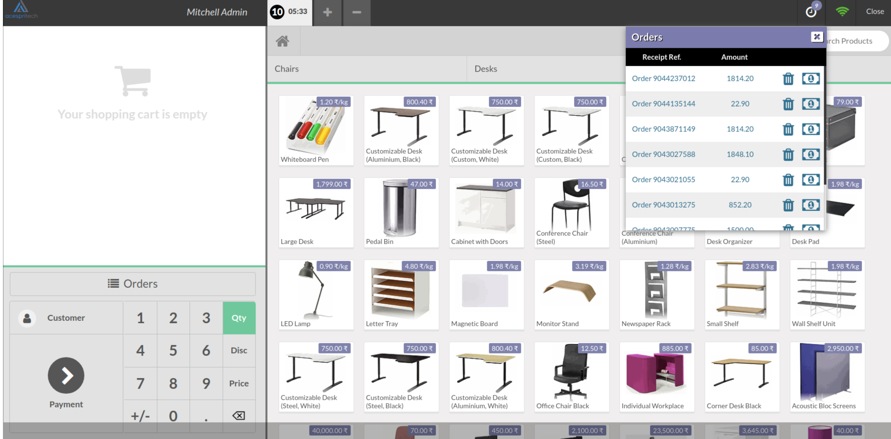
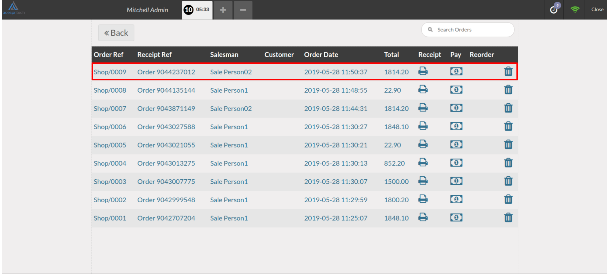
When sales person give discount more the limit then this popup window comes and prompt for authentication of manager.
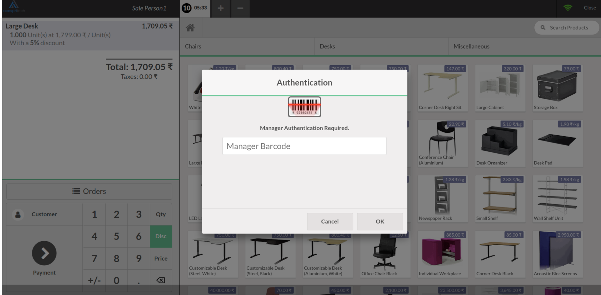
NOTE: We give 60 days support for our customers. Before trying in your live db, please ask us to provide you for test link. If any other custom modules are installed and because of that some errors occurs then we charge extra.